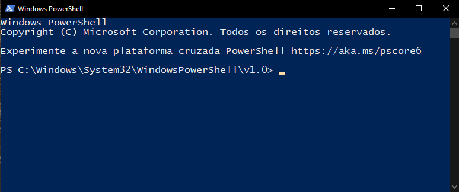

As primeiras versões do Windows já contavam com o Prompt de Comandos, pelo qual, utilizando comandos Bash podemos executar uma infinidade de tarefas, como gerenciar arquivos e pastas, obter informações, gerenciar o computador, configurar a rede, entre muitos outros recursos. A partir do Windows 7 estreou o Windows PowerShell, uma ferramenta ainda mais poderosa que roda no .NET Framework e que utiliza uma linguagem de script que aceita objetos baseada em C#, com influência de várias outras linguagens de programação.
O PowerShell é utilizado para automatizar e gerenciar sistemas, compilar soluções, gerenciar recursos de nuvem entre outras tarefas. Foi inicialmente desenvolvido para Windows, tendo se tornado multiplataforma e de código aberto em 2016.
Veremos nesta sessão introdutória alguns cmdlets básicos e úteis do Powershell que te ajudarão em tarefas comuns.
Bloquear a tela:
rundll32.exe user32.dll,LockWorkStation
Fazer logoff:
shutdown.exe -l
Reiniciar:
shutdown.exe -r
Reiniciar:
Restart-Computer
Desligar:
shutdown.exe -s
Desligar:
Stop-Computer
Forçar o fechamento de aplicativos para reiniciar ou desligar:
Restart-Computer -Force
Forçar o fechamento de aplicativos para reiniciar ou desligar:
Stop-Computer -Force
Abrir arquivos:
Start-Process “C:\Exemplo.txt”
Copiar arquivos:
Copy-Item -Path C:\boot.ini -Destination C:\boot.bak
Criar pastas:
New-Item -Path 'C:\temp\New Folder' -ItemType Directory
Criar arquivos:
New-Item -Path 'C:\temp\New Folder\file.txt' -ItemType File
Listar os processos em execução:
Get-Process
Parar um processo usando o nome da imagem (Parar o Gerenciador de Tarefas):
Stop-Process -Name Taskmgr
Parar um processo pelo Identificador PID:
Stop-Process -Id 2332
Listar os aplicativos padrão instalados no computador:
Get-AppxPackage | Select Name, PackageFullName
Desinstalar um aplicativo padrão (Desinstalar a calculadora):
Get-AppxPackage *Microsoft.WindowsCalculator* | Remove-AppxPackage
Iniciando outra instância do PowerShell:
Start-Process PowerShell
Iniciando o Prompt de Comandos:
Start-Process Cmd
Iniciando a Calculadora:
Start-Process Calc
Iniciando o Bloco de Notas:
Start-Process Notepad
Abrindo uma janela do Explorer:
Start-Process Explorer
Iniciando o Wordpad:
Start-Process Write
Iniciando o Paint:
Start-Process Mspaint